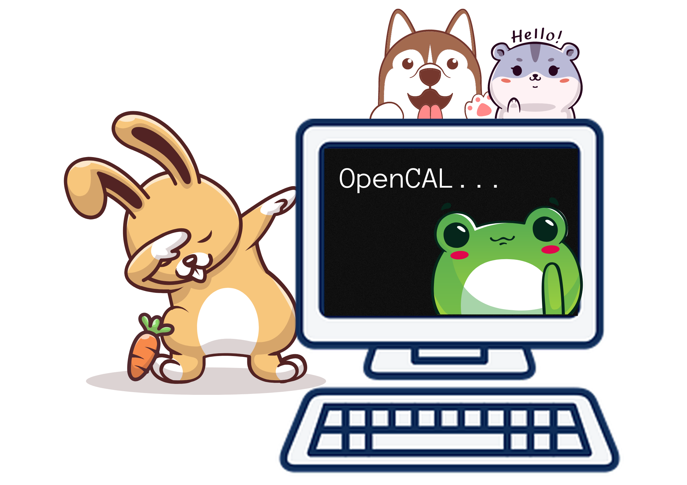
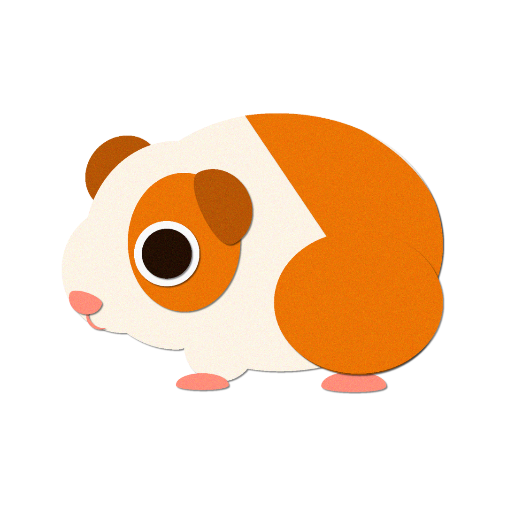
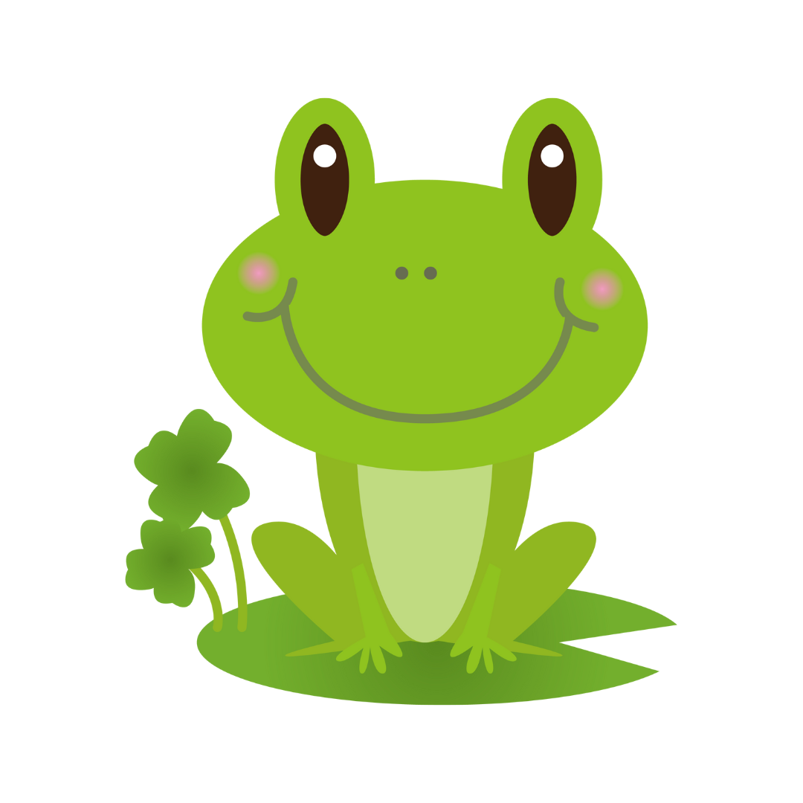

Use only in LANDSCAPE MODE
Dog CAL
A virtual experiment demonstrating effects of various drugs on Dog heart rate and blood pressure.

Guinea pig CAL
A virtual experiment demonstrating effects of various drugs on guinea pig illeum to perform histamine
bioassay.
Rabbit CAL
A virtual experiment demonstrating effects of various drugs on rabbit eye pupil size and vaious
reflexes.

Ciliary motility CAL
A virtual experiment demonstrating effects of various drugs on ciliary motility of frog oesophagus.
Frog heart CAL
A virtual experiment demonstrating effects of various drugs on rate and contractility of frog heart.